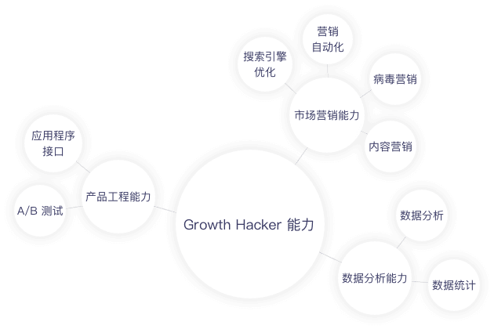
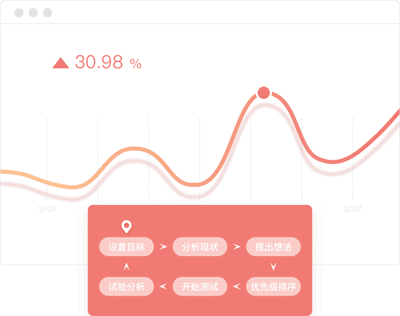

Growth Hacker 可以帮您做什么?
用户爆发式增长
Growth Hacker（增长黑客）以低成本甚至免费的方式获取大量用户。Dropbox 通过 “推荐好友可以获取额外 500M 存储空间” 的病毒营销方式，实现了新用户每年 500% 增长的奇迹。
提升用户活跃度
Growth Hacker（增长黑客）可以大幅度提升用户活跃度。LinkedIn 通过搜索引擎优化、邮件邀请搭建完善的运营机制，激活了了全球 4 亿活跃的职场人士。2016 年 6 月微软溢价 50% ，以 262 亿美元价格收购 LinkedIn 。
提高营业收入
Growth Hacker（增长黑客）通过创新商业模式获取大量营业收入。Slack 作为一款云端协作工具，提供大量免费功能和付费功能。随着越来越多用户使用 Slack ，其营业收入每 11 天就增加 100W 美元。
如何成为一名 Growth Hacker?
掌握增长能力
要成为一名 Growth Hacker （增长黑客），应该拥有市场营销、产品研发、数据分析三大方面的能力，同时掌握 9 种常用的增长黑客工具。
开展增长试验
Growth Hacker（增长黑客）并不是只有一种固定的策略，其核心在于通过不断的试验或者测试找出新的增长点。Growth Hacker 应该熟练掌握“提出想法 – 排优先级 – 上线试验 – 数据分析”整个过程，用数据驱动增长。
管理增长团队
越来越多的企业开始搭建增长团队，要想成为一名顶尖的 Growth Hacker （增长黑客），需要掌握增长团队的组织架构、团队文化、增长试验、资源协调等管理能力。
Growth Hacker 必备的8项能力
Growth Hacker （增长黑客）是市场营销、产品工程、数据分析的聚合，一名合格的 Growth Hacker 应该熟练掌握上述若干技能。
常用的 SEO 方法包括提高关键词的密度和权重、增加长尾关键词数量、建立外联、优化界面结构等等。
一个完整的病毒传播过程包括发送者、接受者、传播内容和传播环境四个要素，其中最重要的是传播内容，它必须要具有传播性。
简单说来，让一部分用户使用方案 A，另一部分使用方案 B，然后通过数据观察对比来选择方案。
数据分析应该建立在实际业务需求的基础上，常见的数据分析方法包括渠道分析、转化分析、留存分析、用户画像、维度拆分、数学建模等等。
Growth Hacker ：如何用数据驱动增长？
设置目标
增长黑客需要评估现状，找出需要解决的问题。一个正确的目标应该是高影响力的目标，你越是清楚你的目标，你越是能提出明确的想法。
分析现状
增长黑客需要详细的定量数据和定性数据，用来分析导致问题可能的原因。以转化为例，你需要知道多少人点击了注册，每一步多少人流失率，他们为什么在这一步流失了等等。
提出想法
一旦发现问题所在，我们就可以着手解决问题。我们可以召开头脑风暴会议，集思广益，这个过程需要详细记录你的假设、支撑依据等文档。
优先级排序
一旦你们提出了若干方案，增长黑客需要根据整体 KPI 、可支配资源、试验预期效果来进行优先级排序。也可以采用 ICE 模型，从影响力、自信心、难易程度三个角度进行量化后排序。
开始测试
我们永远无法完全预知一个想法的效果，只有试验数据才能证明或者推翻我们的假设。我们做的试验越多，我们验证或者推翻的假设也就越多，增长的速度也就越快。
实验分析
做完试验后，你就会得到很多经验。如果数据表明试验有用，你就可以系统化、自动化你的产品假设；如果试验无效的话，你必须从中汲取假设、避免犯同样的错误。